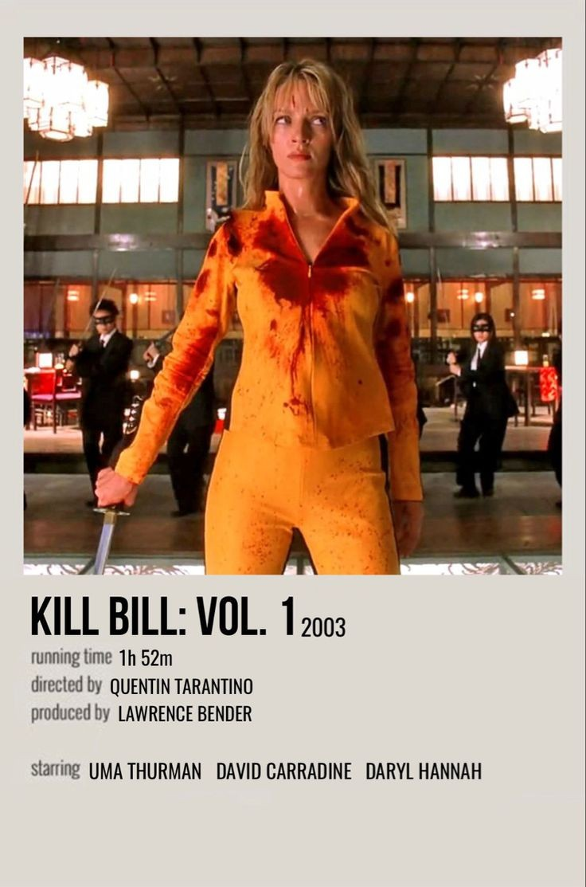
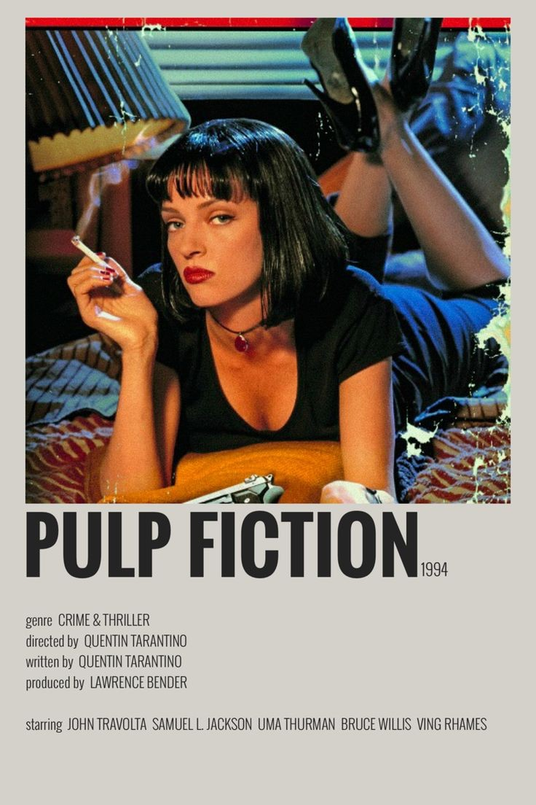
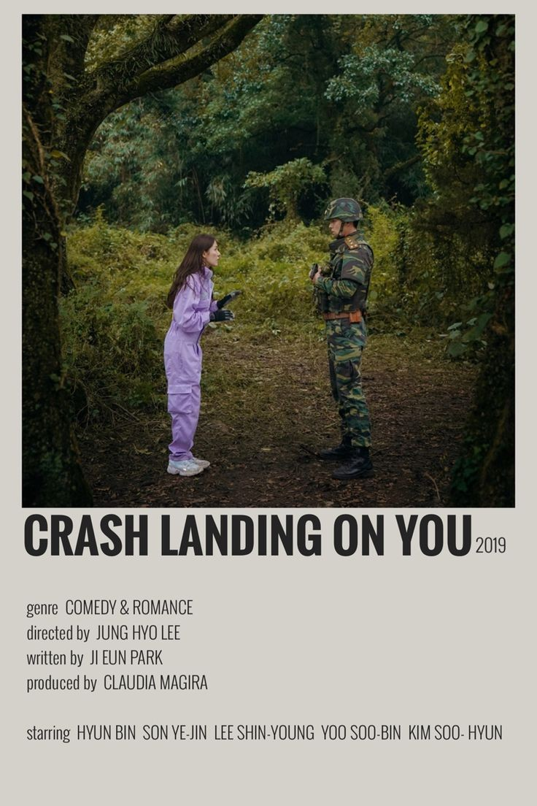

In New York City in 1987, a handsome, young urban professional, Patrick Bateman (Christian Bale), lives a second life as a gruesome serial killer by night. The cast is filled by the detective (Willem Dafoe), the fiance (Reese Witherspoon), the mistress (Samantha Mathis), the coworker (Jared Leto), and the secretary (Chloë Sevigny). This is a biting, wry comedy examining the elements that make a man a monster.
MULHOLLAND DRIVE
A dark-haired woman (Laura Elena Harring) is left amnesiac after a car crash. She wanders the streets of Los Angeles in a daze before taking refuge in an apartment. There she is discovered by Betty (Naomi Watts), a wholesome Midwestern blonde who has come to the City of Angels seeking fame as an actress. Together, the two attempt to solve the mystery of Rita's true identity. The story is set in a dream-like Los Angeles, spoilt neither by traffic jams nor smog.
Widely regarded as one of the greatest films of all time, this mob drama, based on Mario Puzo's novel of the same name, focuses on the powerful Italian-American crime family of Don Vito Corleone (Marlon Brando). When the don's youngest son, Michael (Al Pacino), reluctantly joins the Mafia, he becomes involved in the inevitable cycle of violence and betrayal. Although Michael tries to maintain a normal relationship with his wife, Kay (Diane Keaton), he is drawn deeper into the family business.
KILL BILL

A former assassin, known simply as The Bride (Uma Thurman), wakes from a coma four years after her jealous ex-lover Bill (David Carradine) attempts to murder her on her wedding day. Fueled by an insatiable desire for revenge, she vows to get even with every person who contributed to the loss of her unborn child, her entire wedding party, and four years of her life. After devising a hit list, The Bride sets off on her quest, enduring unspeakable injury and unscrupulous enemies.
PULP FICTION

Vincent Vega (John Travolta) and Jules Winnfield (Samuel L. Jackson) are hitmen with a penchant for philosophical discussions. In this ultra-hip, multi-strand crime movie, their storyline is interwoven with those of their boss, gangster Marsellus Wallace (Ving Rhames) ; his actress wife, Mia (Uma Thurman) ; struggling boxer Butch Coolidge (Bruce Willis) ; master fixer Winston Wolfe (Harvey Keitel) and a nervous pair of armed robbers, "Pumpkin" (Tim Roth) and "Honey Bunny" (Amanda Plummer).
In the years after the Civil War, Jo March lives in New York and makes her living as a writer, while her sister Amy studies painting in Paris. Amy has a chance encounter with Theodore, a childhood crush who proposed to Jo but was ultimately rejected. Their oldest sibling, Meg, is married to a schoolteacher, while shy sister Beth develops a devastating illness that brings the family back together.
LOST IN TRANSLATION
A lonely, aging movie star named Bob Harris (Bill Murray) and a conflicted newlywed, Charlotte (Scarlett Johansson), meet in Tokyo. Bob is there to film a Japanese whiskey commercial; Charlotte is accompanying her celebrity-photographer husband. Strangers in a foreign land, the two find escape, distraction and understanding amidst the bright Tokyo lights after a chance meeting in the quiet lull of the hotel bar. They form a bond that is as unlikely as it is heartfelt and meaningful.
Follows the lives of 5 families living on the same street in a neighbourhood called Ssangmundong in Seoul. It takes a nostalgic look back at the year 1988. A nostalgic trip back to the late 1980s through the lives of five families and their five teenage kids living in a small neighborhood in Seoul.
CRASH LANDING ON YOU

Yoon Se-Ri (Son Ye-Jin) is an heiress to a conglomerate in South Korea. One day, while paragliding, an accident caused by strong winds leads Yoon Se-Ri to make an emergency landing in North Korea. There, she meets Ri Jeong-Hyeok (Hyun-Bin), who is a North Korean army officer. He tries to protect her and hide her. Soon, Ri Jeong-Hyeok falls in love with Yoon Se-Ri.
In the mythical continent of Westeros, several powerful families fight for control of the Seven Kingdoms. As conflict erupts in the kingdoms of men, an ancient enemy rises once again to threaten them all. Meanwhile, the last heirs of a recently usurped dynasty plot to take back their homeland from across the Narrow Sea.
BREAKING BAD
This critically acclaimed series set in Albuquerque ran from 2008-2013 and starred Bryan Cranston and Aaron Paul. Created by Vince Gilligan, the series follows the exploits of Walter White, a modest high school chemistry teacher, who discovers a new purpose in life when he learns he has terminal cancer and turns to a life of crime to provide for his family. The series won 2 Golden Globes (including Best Television series), a handful of Primetime Emmys (outstanding lead actor, directing, cinematography), Screenwriters Guild Awards for outstanding performances (male and female actor, ensemble), and was nominated for awards for 191 times.